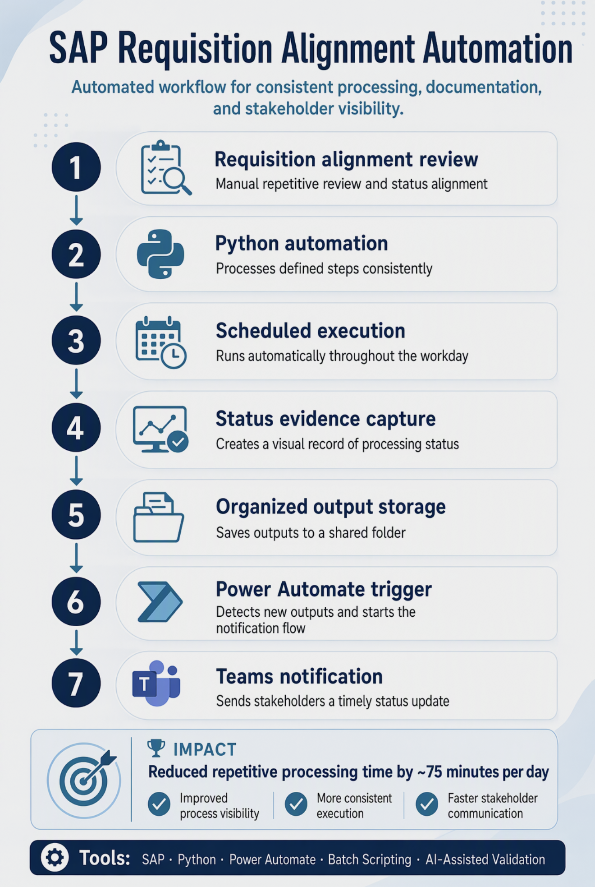

AI-Enabled Requisition Alignment Automation
Co-developed an automation workflow that reduced repetitive requisition-related processing by combining SAP process steps, Python, scheduled execution, file-based workflow triggers, Power Automate, and automated stakeholder notifications.
saved daily
The workflow reduced repetitive manual processing while improving visibility, execution consistency, documentation, and communication across the requisition-alignment process.
Workflow Overview
The workflow connects a recurring SAP requisition-alignment process with Python-based automation, scheduled execution, automatic documentation, organized file storage, Power Automate triggers, and Teams notifications.

My Contribution
- Co-developed an AI-enabled requisition-alignment automation workflow designed to reduce repetitive manual processing.
- Used Python, Power Automate, batch scripting, and AI-assisted validation to connect and streamline recurring process steps.
- Helped map manual workflow activities, identify automation opportunities, and validate requirements with operations stakeholders.
- Supported scheduled execution, automatic screenshot capture, organized file storage, and notification logic to improve process visibility.
- Helped refine the workflow through stakeholder feedback, improving consistency and reducing repetitive effort by approximately 75 minutes per day.
Business Value
- Reduced repetitive manual effort in a recurring operational process.
- Improved process visibility through automated documentation and stored outputs.
- Supported more consistent execution of recurring alignment activities.
- Enabled faster stakeholder awareness through automated Teams notifications.
- Demonstrated how automation can strengthen operational efficiency and reliability.
Tools & Technologies
SAP Python Power Automate Batch Scripting AI-Assisted Validation Microsoft Teams Process Mapping Stakeholder Collaboration Process ImprovementConfidentiality Note
This project description uses public, portfolio-safe language and does not include internal workflow logic, system configurations, screenshots, purchase information, supplier data, business rules, or company-specific records.